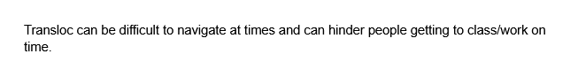
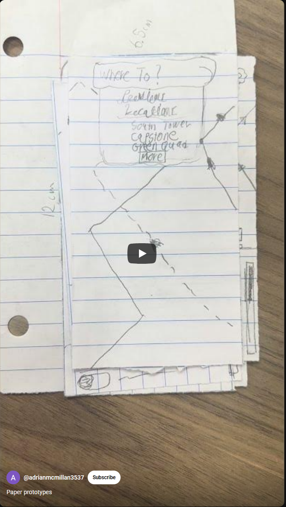

Problem Statement
Transloc can be difficult to navigate at times and can hinder people getting to class/work on time.
Sketches

Here are some examples of how our app could be used by University students
Affinity Diagram

Here are the necessary steps that our group has divised to create our app
Prototype
Based on our previous sketches here is what using the app could look like